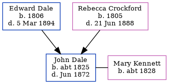

John Dale c1825 - 1872
[ Home ] | [ Calendar ] | [ Surnames Index ] | [ Family History ]The child of Edward Dale and Rebecca Crockford, John Dale, the three times great-uncle of <a href="I1.html">Nigel Horne</a>, was born in Harbledown, Kent, England <i>c.</i> 1825<span class="citation">1,2,3,4,5,6</span>. He married Mary Kennett in Kent, England in Jan 1857<span class="citation">7</span>. Like his father, he was an agricultural laborer. </p><p>John spent all of his life in Kent, England. Throughout his life, he lived in several places around the county: in Chartham in 1841<span class="citation">1</span> and in 1851<span class="citation">2</span>; in Chartham Hatch on Mar 30, 1851<span class="citation">3</span> (the same place as his parents had been living on Jun 6, 1841); and in Northgate, Canterbury in 1861<span class="citation">4</span> and in 1871<span class="citation">5</span>. <p>He died in Jun 1872 in Canterbury, Kent<span class="citation">6</span>.
Parents
- Edward was born in 1806
- Rebecca was born in 1805
Citations
- 1841 England Census Online publication - Provo, UT, USA: The Generations Network, Inc., 2006.Original data - Census Returns of England and Wales, 1841. Kew, Surrey, England: The National Archives of the UK (TNA): Public Record Office (PRO), 1841. Data imaged from the National
- 1851 England Census Online publication - Provo, UT, USA: The Generations Network, Inc., 2005.Original data - Census Returns of England and Wales, 1851. Kew, Surrey, England: The National Archives of the UK (TNA): Public Record Office (PRO), 1851. Data imaged from the National
- 1851 England, Wales & Scotland Census - Findmypast (was age 26 and the son of the head of the household)
- 1861 England Census Online publication - Provo, UT, USA: The Generations Network, Inc., 2005.Original data - Census Returns of England and Wales, 1861. Kew, Surrey, England: The National Archives of the UK (TNA): Public Record Office (PRO), 1861. Data imaged from the National
- 1871 England Census Online publication - Provo, UT, USA: The Generations Network, Inc., 2004.Original data - Census Returns of England and Wales, 1871. Kew, Surrey, England: The National Archives of the UK (TNA): Public Record Office (PRO), 1871. Data imaged from the National
- England & Wales, FreeBMD Death Index: 1837-1915 Online publication - Provo, UT, USA: The Generations Network, Inc., 2006.Original data - General Register Office. England and Wales Civil Registration Indexes. London, England: General Register Office. © Crown copyright. Published by permission of the Cont
- England & Wales, FreeBMD Marriage Index: 1837-1915 Online publication - Provo, UT, USA: The Generations Network, Inc., 2006.Original data - General Register Office. England and Wales Civil Registration Indexes. London, England: General Register Office. © Crown copyright. Published by permission of the Cont
Family Tree
Generated by Ged2Site. Last updated on Jul 20, 2025